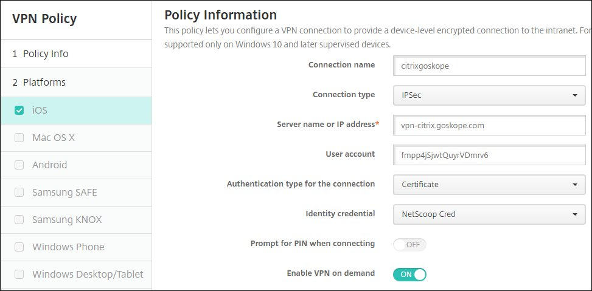

Configure XenMobile for iOS Per-App VPN
By default all Netskope tenants are set to On-Demand iOS VPN. If you want to use the Per-App iOS VPN profile, contact your sales rep, professional services rep, customer success manager, or Support to have Per-App VPN enabled.
To configure XenMobile for iOS per-app VPN:
Log in to your XenMobile account (https://xms.bowlins.com:4443). Go to Configure > Apps, click Add, and then select Public Store App.

Enter the name of the app and a description.
Important
iPhone and iPad should be the only platforms selected.
When finished, click Next.
Search for the app you entered in step 1.

Select the app, enter these parameters:
Name: Leave as is or enter a new name.
Description: Leave as is or enter a new description.
Pad app:
OFF.Remove app if MDM profile is removed:
ON.Prevent app data backup:
ON.Force app to be managed:
ON.Force license association to device:
ON.
When finished, click Next.
Repeat steps 3 and 4 for iPad.
Select Delivery Groups Assignment in the left panel, select AllUsers, and click Save
Now configure an App Inventory policy. Go to Configure > Device Policies and click Add. Click More to expand the options, and under Apps select App Inventory.
Enter a policy name, and then click Next.
Make sure iOS is the only platform selected, and the iOS Policy is ON. When finished, click Next.

On the Assignment page, choose the Delivery Groups, like AllUsers, and then click Save.
Now configure your credentials for Device Policies. Go to Configure > Device Policies and click More to expand the options. Under Security, click Credentials.
Enter a unique Policy Name and click Next.
Make sure iOS is the only platform selected, and then enter these parameters:

Credential type:
Credential Provider.Credential provider: Select the Netskope credential provider (If you do not see a Netskope Credential Provider in the dropdown list, refer to steps 1-9 in Configure XenMobile for iOS On-Demand VPN to create a Netskope Credential Provider).
Remove policy:
Select date.Allow user to remove policy:
Always.
When finished, click Assignment in the left panel.
For Choose delivery groups, select AllUsers.

When finished, click Save.
Now create a VPN policy. Go to Configure > Device Policies, click Add, and then click VPN.
Make sure iOS is the only platform selected, and then enter a unique VPN policy name.

When finished, click Next.
Make sure iOS is the only platform selected, and then enter these parameters:
 Connection name: Enter a unique connection name.
Connection type:
Citrix VPNServer name or IP address: Enter the VPN Server Name from the Netskope UI (Settings > Security Cloud Platform > Netskope Client > MDM Distribution > Create VPN Configuration.
User account: Enter an optional user account name.
Authentication type for the connection:
CertificateIdentity credential: Select the Credentials Policy (you created in step 12 above).
Prompt for PIN when connecting:
OFFEnable VPN on demand:
OFFEnable per-app VPN:
ONOn-demand match app enabled:
ONActionParameters:DomainAction:
ConnectIfNeeded.RequiredURLStringProbe: Enter an HTTP or HTTPS URL to probe.
Next, add the Proxy parameters:

Proxy configuration:
Automatic.Proxy server URL: Enter the PAC URL from the Netskope UI Settings > Security Cloud Platform > Netskope Client > MDM Distribution > Create VPN Configuration.
Remove policy:
Select date.Allow user to remove policy:
Always.
Click Assignment in the left panel, and enter these parameters:
Choose delivery groups:
AllUsersExpand the Deployment Schedule section to see these options.

Deploy:
OnDeployment schedule:
NowDeployment condition:
On every connectionDeploy for always-on connections:
On
When finished, click Save.
Now create an App Attribute policy. Go to Configure > Device Policies and click Add. Click More to expand the options, and under Apps select App Attributes.
Enter a unique App Attributes policy name and click Next.
Enter these parameters:
Managed app bundle ID: Select the app ID for the app you selected in step 2. If it's not in the dropdown list, click Add New and enter it.
Per-App VPN Identifier: Select the VPN policy name you created in step 16.
When finished, click Next.
Select the delivery groups and click Save.
The configuration for the XenMobile per-app VPN is complete. Install the Citrix Secure Hub iOS App on your device, and then after that you can perform the server login, user login, and so on to register the device. Refer to the Citrix product documentation for more information.